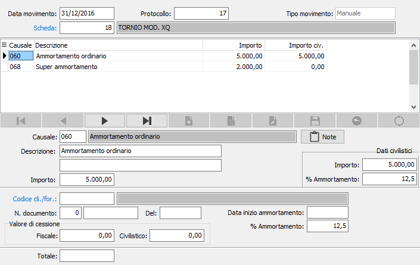

Manutenzione movimenti
Il programma consente l’inserimento extracontabile, la variazione e la cancellazione dei movimenti cespiti.
La procedura Gestione cespiti prevede che a ciascuna anagrafica cespiti siano collegati i relativi movimenti, ovvero le registrazioni dell'acquisto, dei vari ammortamenti, degli incrementi e decrementi, ecc. Dall'assemblaggio delle due tabelle, anagrafiche e movimenti cespiti, scaturiscono la stampa delle schede cespiti e del libro cespiti.
Normalmente questi movimenti scaturiscono automaticamente da registrazioni contabili, e ove necessiti apportare correzioni occorre procedere tramite il normale programma di variazione prima nota di contabilità. Non sussiste quindi generalmente alcun motivo di accedere direttamente a questa tabella.
Tuttavia all'atto dell'attivazione della procedura è necessario, dopo aver creato le anagrafiche dei cespiti preesistenti, procedere all'inserimento dei relativi movimenti. Da qui la necessità di accedere a questo programma al fine di inserire, per ciascun cespite, tutti i movimenti intervenuti fino all'installazione della procedura, in forma analitica oppure in forma sintetica.
Si tenga conto che, per inserire movimenti con date precedenti a quelle dell'anno di inizio utilizzo della procedura cespiti, è necessario creare nell’apposita tabella i protocolli cespiti per gli anni in questione. Purché venga utilizzata una stessa data di registrazione, è possibile inserire più movimenti cespiti nella stessa registrazione extracontabile.
Accedendo al programma, viene visualizzata la finestra video Registrazione cespiti.

DATA REGISTRAZIONE: inserire la data di in cui è avvenuto il movimento del cespite che si vuole trattare. Sul campo è attiva la funzione di ricerca (F9) relativamente ai movimenti inseriti.
NUMERO PROTOCOLLO: inserire il numero di protocollo interno di registrazione del movimento sulla tabella movimenti cespiti. In caricamento, il numero viene proposto automaticamente
NUMERO SCHEDA: indicare il numero della scheda cespite alla quale si riferisce il movimento. Sul campo è attiva la ricerca F9 sull'anagrafica cespiti.
CAUSALE: indicare il codice della causale cespiti relativa il movimento che si vuole trattare. Sul campo è attiva la ricerca F9 sulla tabella causali cespiti. A conferma, viene visualizzata la prima descrizione.
PULSANTE NOTE: Se vi sono delle note, agendo sul pulsante si possono visualizzare. Se si è in modifica o inserimento si possono modificare o aggiungere delle annotazioni.
DESCRIZIONE AGGIUNTIVA: inserire una eventuale ulteriore descrizione del rigo del movimento a completamento della descrizione fissa.
IMPORTO: Inserire l'importo del movimento.
CODICE CLIENTE/FORNITORE: inserire il codice del cliente/fornitore a cui fa riferimento il movimento cespite in esame, nel caso in cui la casuale renda attivo questo campo. Sul campo è attiva la ricerca F9 sulla relativa anagrafica.
N. DOCUMENTO: indicare la serie ed il numero del documento come riferimento dell'operazione.
DEL: indicare la data del documento.
DATA INIZIO AMMORTAMENTO: indicare la data di inizio ammortamento da memorizzare sulla scheda del cespite; il campo viene considerato solo per i movimenti di acquisto cespite se la causale prevede l'aggiornamento della data inizio ammortamento.
VALORE DI CESSIONE: indicare solo nel caso di vendita o dismissione parziale il valore della quota parte del cespite di cui si sta registrando la vendita o dismissione. Nel caso di vendita o dismissione totale l'importo proposto in automatico non deve essere modificato.
PERCENTUALE DI AMMORTAMENTO: inserire la percentuale di ammortamento applicata nel caso si tratti di un movimento di ammortamento.
Se attiva la gestione secondo i criteri civilistici saranno presenti i campi:
IMPORTO e VALORE DI CESSIONE: Inserire i valori del movimento secondo la valutazione civilistica.
PERCENTUALE DI AMMORTAMENTO: inserire la percentuale di ammortamento applicata, secondo la valutazione civilistica, nel caso si tratti di un movimento di ammortamento.